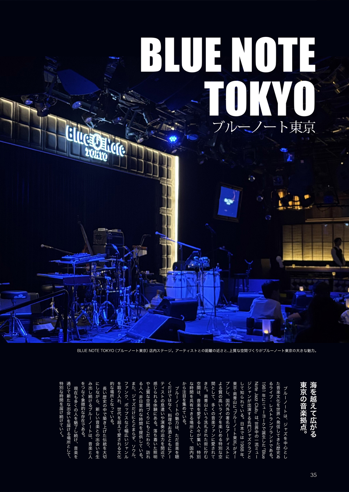
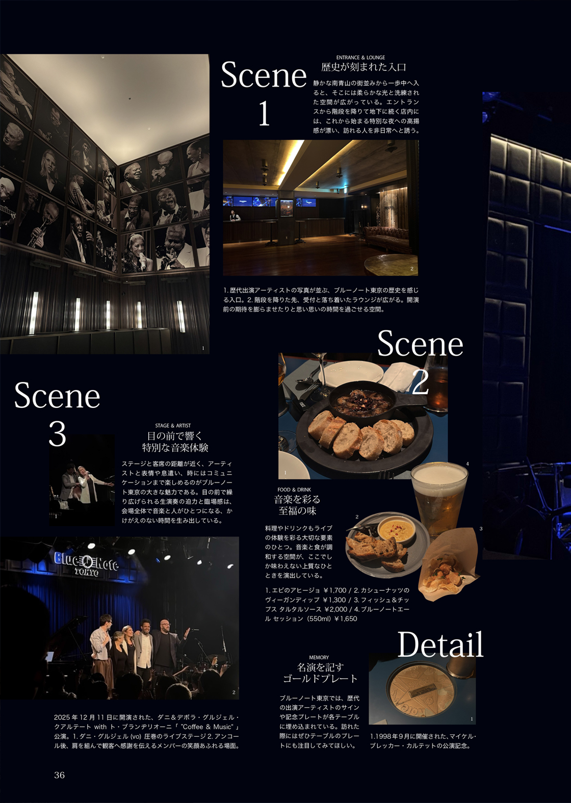
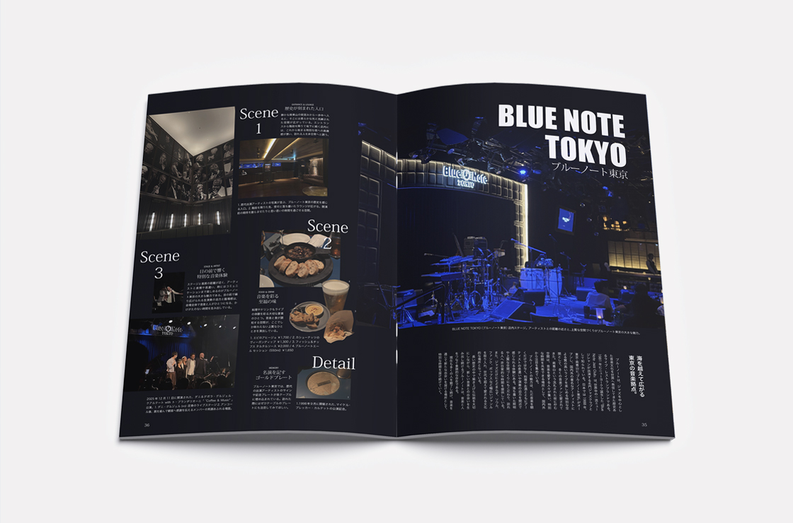

BLUE NOTE TOKYO
Editorial Design / Magazine
Adobe Photoshop / Adobe InDesign
ブルーノート東京で過ごす特別な夜の時間をテーマに、音楽と食、空間が織りなす上質な時間を感じられる。訪れたくなるような魅力をまとめた。情報量の多さを感じさせない誌面設計を意識し、ページをまたぐ写真配置によって視覚的な広がりを演出した。綴じ部分を考慮して写真や要素の配置を調整し、余白を効果的に取り入れることで、シーンごとの独立性を明確化。全体の世界観に合わせてフォントを選定し、情報の読みやすさと誌面の雰囲気を両立した。